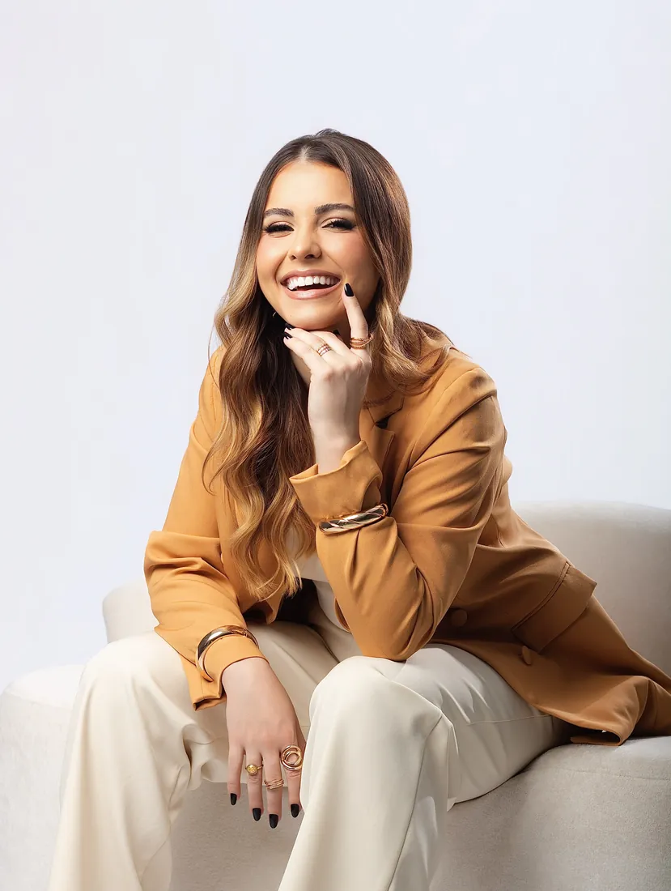
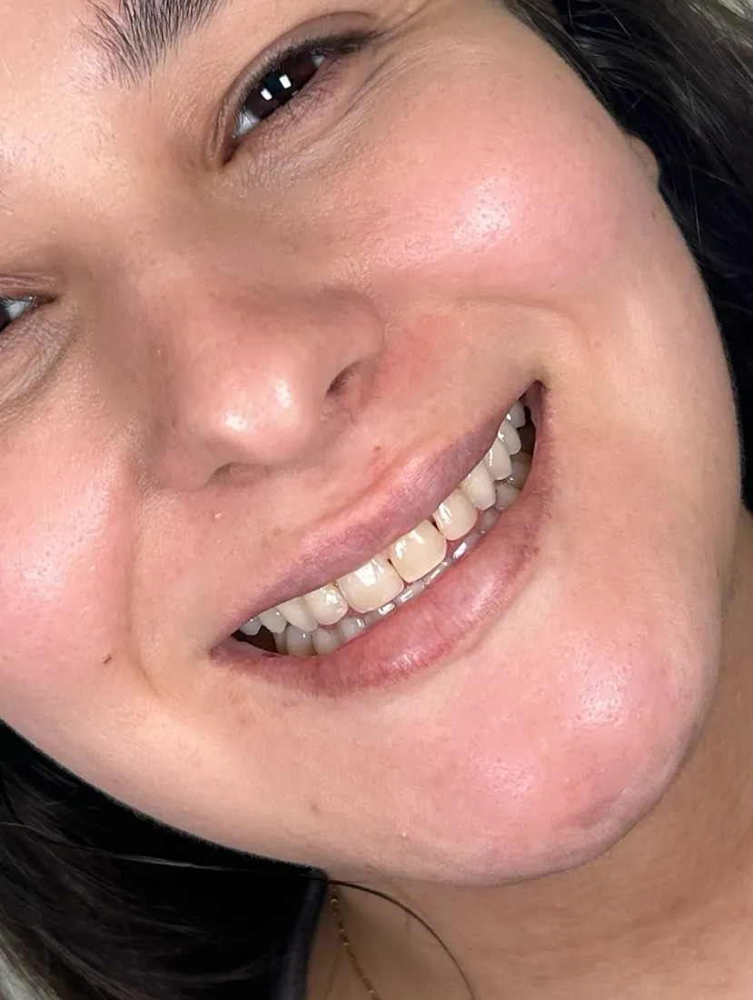
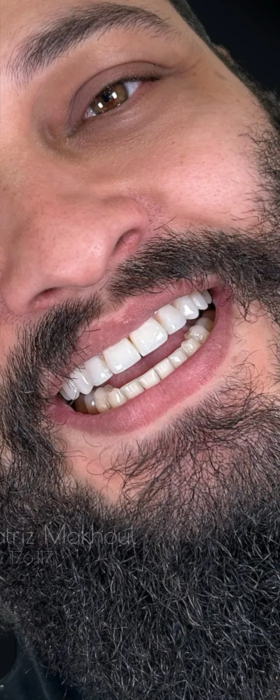
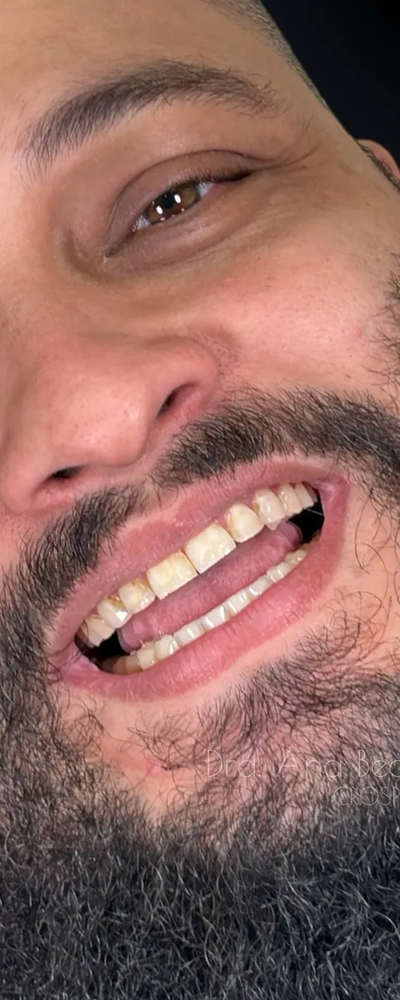
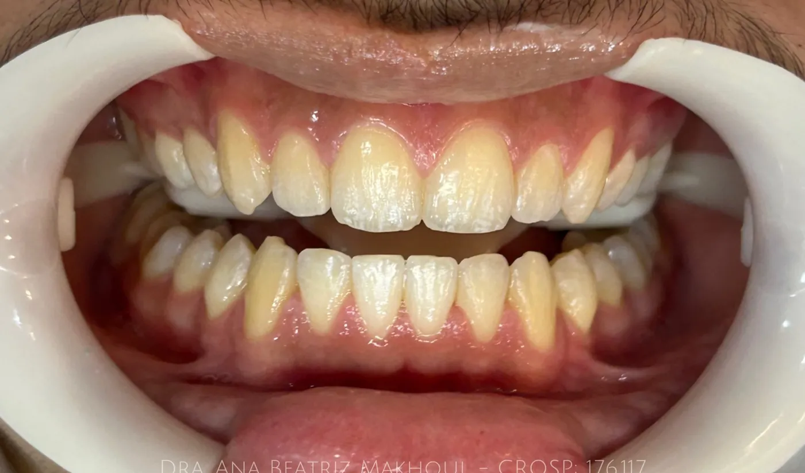
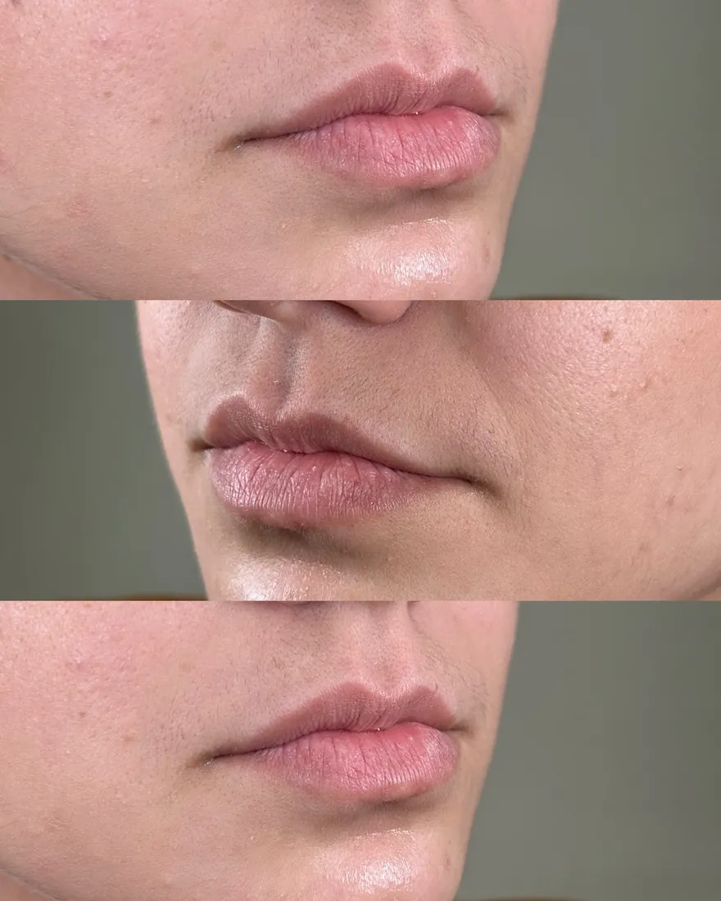
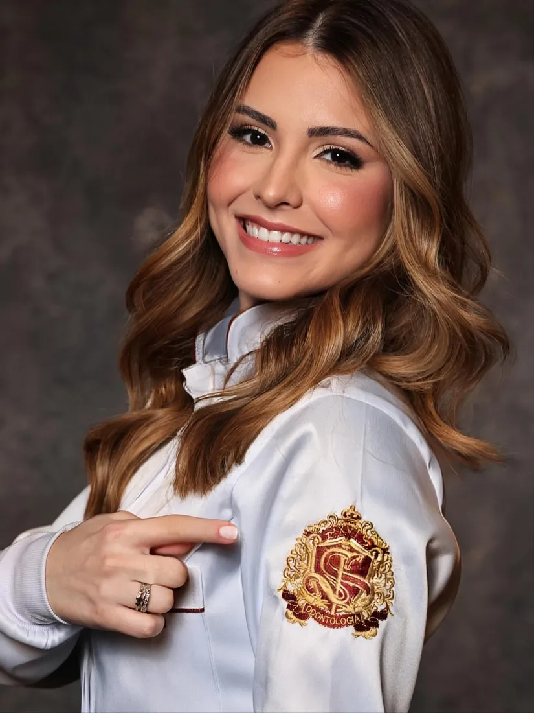

Odontologia estética
Sorrisos naturais, feitos à mão.
Planejamento individual, atenção aos detalhes e resultado que respeita o seu rosto e a sua personalidade.
Agendar avaliação- Lentes em resina à mão livre
- Harmonização orofacial
- Avaliação individual

CRO-SP 176.117São José do Rio Preto · SP
Tratamentos
Cuidado completo para o seu sorriso.
Toque em um tratamento para ver como funciona e alguns casos.
Lentes em resina
Lentes de resina composta esculpidas à mão, uma a uma, respeitando a proporção, o formato e a individualidade do seu sorriso. Cada caso é planejado antes de começar.
- Planejamento individualizado
- Esculpidas à mão livre
- Resultado harmônico e natural
Clareamento
Clareamento de consultório com avaliação prévia, para um sorriso mais iluminado e saudável, no tom certo para você.
- Avaliação antes de começar
- Acompanhamento profissional
- Tom natural
Harmonização labial
Preenchimento labial feito aos poucos, no volume que combina com o seu rosto e com o que você deseja, sem exageros.
- Quantidade definida caso a caso
- Contorno e proporção
- Resultado discreto
Toxina botulínica
Indicada para suavizar expressões, equilibrar o sorriso gengival e também no cuidado com bruxismo e dor orofacial, sempre após avaliação.
- Sorriso gengival
- Bruxismo e DTM
- Avaliação individualizada
Rinomodelação e mento
Harmonização do perfil com rinomodelação e projeção de mento, buscando equilíbrio entre as feições e preservando a sua identidade.
- Perfil equilibrado
- Pouco produto, planejamento preciso
- Naturalidade
Resultados
Veja a diferença.
Arraste para comparar. Cada resultado depende de avaliação individual.





Imagens de pacientes publicadas com autorização. As fotos de pós-imediato podem mostrar edema (inchaço); o resultado final é avaliado após a acomodação do produto.
Atendimento
Como é o atendimento.
Um caminho simples, do primeiro contato ao acompanhamento.
Agendar avaliação- 01
Avaliação
Conversamos sobre o que você deseja e examinamos com calma a saúde da sua boca e do seu rosto.
- 02
Planejamento
Cada caso é pensado de forma individual: proporção, formato, cor e o que faz sentido para você.
- 03
Procedimento
Feito com técnica e atenção a cada detalhe, no tempo necessário e com conforto.
- 04
Acompanhamento
Um sorriso bem cuidado é resultado de acompanhamento. Voltamos a conversar para manter tudo no lugar.

Sobre
Olá, eu sou a Ana Beatriz.
Sou cirurgiã-dentista e acredito que a odontologia estética é sobre cuidar dos detalhes sem perder a naturalidade.
Para mim, um sorriso bonito não é copiar um padrão: é criar algo que faça sentido para você, com planejamento, técnica e muito cuidado.
Estou sempre estudando, porque cada paciente tem um motivo único para buscar um novo sorriso.
Dra. Ana Beatriz Makhoul
Cirurgiã-dentista · CRO-SP 176.117
Galeria
Trabalhos
Dúvidas
Perguntas frequentes.
Como funciona a primeira consulta?
É uma avaliação individual: conversamos sobre o que você deseja, examinamos sua saúde bucal e facial e definimos juntos o melhor caminho.
As lentes em resina precisam desgastar o dente?
Isso depende de cada caso e é definido na avaliação. O planejamento busca sempre a abordagem mais conservadora possível.
O resultado fica natural?
Esse é o objetivo de todo o trabalho: respeitar a proporção do seu rosto e a sua individualidade, sem exageros.
A toxina botulínica serve só para estética?
Não. Ela também pode ser indicada no cuidado com bruxismo e dor orofacial, após avaliação.
Quanto tempo dura o resultado?
A duração varia de acordo com o procedimento e com cada paciente. Na avaliação explicamos o que esperar e como manter.
Vamos conversar sobre o seu sorriso?
Agende uma avaliação e conte o que você deseja.
Agendar pelo WhatsApp- Endereço[CONFIRMAR: endereço do consultório]
- Horário[CONFIRMAR: horário de atendimento]
- WhatsApp[CONFIRMAR: WhatsApp]
- Instagram@dra.anabeatrizmakhoul